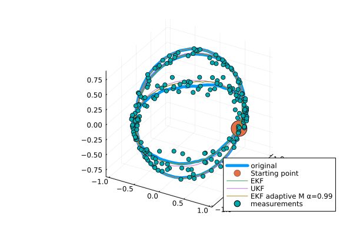

GeometricKalman
Kalman filters on manifolds with an affine connection, unifying the Lie group and Riemannian approaches.

arXiv preprint: https://arxiv.org/abs/2506.01086.
Getting started
Basic setting (example: a car driving on a sphere)
using Manifolds
using RecursiveArrayTools
using LinearAlgebra
using Distributions
using GeometricKalman
using GeometricKalman: gen_car_sphere_data, car_sphere_f, car_sphere_h
M = TangentBundle(Manifolds.Sphere(2)) # state manifold
M_obs = Manifolds.Sphere(2) # observation manifold
retraction = Manifolds.FiberBundleProductRetraction()
inverse_retraction = Manifolds.FiberBundleInverseProductRetraction()Manifolds.FiberBundleInverseProductRetraction()Generating data using the gen_car_sphere_data function.
dt = 0.01
vt = 5
times, samples, controls, measurements = gen_car_sphere_data(;
vt = vt,
N = 200,
noise_f_distr = MvNormal(
[0.0, 0.0, 0.0, 0.0],
1e4 * diagm([1e-3, 1e-3, 1e-2, 1e-2]),
),
noise_h_distr = MvNormal([0.0, 0.0], diagm([0.01, 0.01])),
retraction = retraction,
)([0.0, 0.01, 0.02, 0.03, 0.04, 0.05, 0.06, 0.07, 0.08, 0.09 … 1.91, 1.92, 1.93, 1.94, 1.95, 1.96, 1.97, 1.98, 1.99, 2.0], RecursiveArrayTools.ArrayPartition{Float64, Tuple{Vector{Float64}, Vector{Float64}}}[RecursiveArrayTools.ArrayPartition{Float64, Tuple{Vector{Float64}, Vector{Float64}}}(([1.0, 0.0, 0.0], [0.0, 1.0, 0.0])), RecursiveArrayTools.ArrayPartition{Float64, Tuple{Vector{Float64}, Vector{Float64}}}(([0.9993028742415547, 0.037330347785630456, 0.00045898450008836206], [-0.03716942967589553, 0.9950492909701365, -0.004397069439294638])), RecursiveArrayTools.ArrayPartition{Float64, Tuple{Vector{Float64}, Vector{Float64}}}(([0.9970176461481813, 0.07347094997270676, 0.023618483847355504], [-0.07316716776448426, 0.9947333302216067, -0.005717782813378881])), RecursiveArrayTools.ArrayPartition{Float64, Tuple{Vector{Float64}, Vector{Float64}}}(([0.992093863676798, 0.1237630395347536, 0.020796050104810816], [-0.12265846206514328, 0.9854096087754517, -0.012914992250293092])), RecursiveArrayTools.ArrayPartition{Float64, Tuple{Vector{Float64}, Vector{Float64}}}(([0.9850321279750922, 0.16845729689716812, 0.03652185618175344], [-0.16778008739103067, 0.9841574801489571, -0.014230720087208036])), RecursiveArrayTools.ArrayPartition{Float64, Tuple{Vector{Float64}, Vector{Float64}}}(([0.9765093251659265, 0.21374003313076317, 0.027289853448617504], [-0.21277181221304065, 0.9743791324932201, -0.017961595266919057])), RecursiveArrayTools.ArrayPartition{Float64, Tuple{Vector{Float64}, Vector{Float64}}}(([0.9667231425964949, 0.25347579561898176, 0.0345888219469974], [-0.25036431246908863, 0.9572149907745391, -0.017284671382577887])), RecursiveArrayTools.ArrayPartition{Float64, Tuple{Vector{Float64}, Vector{Float64}}}(([0.9544158903180481, 0.29811318990552405, 0.014793049474691032], [-0.2949978910981335, 0.9451741478878475, -0.014750533288176373])), RecursiveArrayTools.ArrayPartition{Float64, Tuple{Vector{Float64}, Vector{Float64}}}(([0.9355244129199534, 0.3532618941170499, 0.0003271018359184488], [-0.3499192726623245, 0.9266871718144403, -0.01602999973472937])), RecursiveArrayTools.ArrayPartition{Float64, Tuple{Vector{Float64}, Vector{Float64}}}(([0.9196789526899177, 0.39265709903761997, 0.003320625624301378], [-0.3902840607728568, 0.9142586177769586, -0.01629222002616113])) … RecursiveArrayTools.ArrayPartition{Float64, Tuple{Vector{Float64}, Vector{Float64}}}(([-0.9103607798304091, 0.1808946863299483, 0.3721832384782502], [-1.3965437732664883, -1.8710717866206865, -2.506538817736505])), RecursiveArrayTools.ArrayPartition{Float64, Tuple{Vector{Float64}, Vector{Float64}}}(([-0.9723441624253111, 0.08493527739243743, 0.21756109130928977], [-0.7836031087884956, -1.9584665171407456, -2.737571355279547])), RecursiveArrayTools.ArrayPartition{Float64, Tuple{Vector{Float64}, Vector{Float64}}}(([-0.9953414413141158, -0.00629833310350586, 0.09620678875658949], [-0.2640309944679319, -1.974389580801802, -2.860882869063021])), RecursiveArrayTools.ArrayPartition{Float64, Tuple{Vector{Float64}, Vector{Float64}}}(([-0.9939079180232409, -0.09413255581917246, -0.05732462320553425], [0.3516118399241935, -1.9422454360872143, -2.9069753192599395])), RecursiveArrayTools.ArrayPartition{Float64, Tuple{Vector{Float64}, Vector{Float64}}}(([-0.9618096969009302, -0.1867068007192178, -0.20015663244702778], [0.9563238558236589, -1.854603605183174, -2.8654281657870735])), RecursiveArrayTools.ArrayPartition{Float64, Tuple{Vector{Float64}, Vector{Float64}}}(([-0.8963523339174471, -0.2793942404592312, -0.3442257280898021], [1.576950675132196, -1.7031640525532588, -2.723936983124743])), RecursiveArrayTools.ArrayPartition{Float64, Tuple{Vector{Float64}, Vector{Float64}}}(([-0.7975320128003762, -0.3510579372870374, -0.49061289549536974], [2.176233623639703, -1.4862302507872416, -2.4741768248562463])), RecursiveArrayTools.ArrayPartition{Float64, Tuple{Vector{Float64}, Vector{Float64}}}(([-0.6738789965100492, -0.41759144138487037, -0.6095116784317715], [2.695240283321629, -1.2319741235849744, -2.1358146423231354])), RecursiveArrayTools.ArrayPartition{Float64, Tuple{Vector{Float64}, Vector{Float64}}}(([-0.5173696348450731, -0.48084875760355783, -0.7078934476680726], [3.1499271083727822, -0.906018193232981, -1.6867212420152153])), RecursiveArrayTools.ArrayPartition{Float64, Tuple{Vector{Float64}, Vector{Float64}}}(([-0.3793808313500163, -0.5094586013239226, -0.7723484436064092], [3.4349327002821557, -0.6197316519751519, -1.2784644172289772]))], Any[0.0, 0.004999979166692708, 0.009999833334166664, 0.01499943750632809, 0.01999866669333308, 0.024997395914712332, 0.02999550020249566, 0.034992854604336196, 0.03998933418663416, 0.044984814037660234 … 0.8163137404456835, 0.8191915683009983, 0.8220489164097717, 0.8248857133384501, 0.8277018881672576, 0.8304973704919705, 0.8332720904256761, 0.8360259786005205, 0.838758966169443, 0.8414709848078965], [[0.9987579124456232, -0.008549263749201404, -0.04908709012161554], [0.9974228023199726, -0.023495075399503317, -0.06779184939315795], [0.9845880789868017, 0.17264082965876687, 0.027954581946654417], [0.9988899904063573, -0.020547503168149614, 0.042386167313664], [0.9480486969232933, 0.3023641798213062, 0.09889171362169002], [0.9774915213468766, 0.20517251485489518, 0.04913822181445479], [0.952080159064741, 0.2969366627180923, 0.07329385410182356], [0.9652380104673706, 0.25655390311637477, 0.04995676075113595], [0.9023776425446691, 0.41999508252364964, 0.09653352211267528], [0.917563706446285, 0.3967892108067669, -0.02520251574543168] … [-0.9137740064040761, 0.14185366040463193, 0.38065023873636245], [-0.8516309979144849, 0.28542819634387984, 0.4396082211731912], [-0.9893336216394926, -0.04967469305209298, 0.13693578773960136], [-0.9936133963135114, -0.01787301194111346, 0.11141352750218869], [-0.9549606929074691, -0.13072457249657388, -0.2663853621114982], [-0.9215646956464488, -0.20206851096844547, -0.33149182284494283], [-0.7112836612620727, -0.23508312654634886, -0.6624284692212541], [-0.5682764885448537, -0.4916442742676408, -0.6598088663749339], [-0.45533480323831854, -0.5337899473026656, -0.7125577233589844], [-0.3141453455022274, -0.5274943444908744, -0.7893430296325094]])Setting initial conditions for filters
p0 = ArrayPartition([1.0, 0.0, 0.0], [0.0, 1.0, 0.0])
P0 = diagm([0.1, 0.1, 0.1, 0.1])
Q = diagm([0.1, 0.1, 0.01, 0.01])
R = diagm([0.01, 0.01])2×2 Matrix{Float64}:
0.01 0.0
0.0 0.01Adapting system dynamics to the interface expected by Kalman filters.
car_f_adapted(p, q, noise, t::Real) = car_sphere_f(p, q, noise, t::Real; vt = vt)
f_tilde = GeometricKalman.default_discretization(
M,
car_f_adapted;
dt = dt,
retraction = retraction,
)(::GeometricKalman.var"#tilde_f#27"{Float64, Manifolds.FiberBundleProductRetraction, FiberBundle{ℝ, TangentSpaceType, Sphere{ManifoldsBase.TypeParameter{Tuple{2}}, ℝ}, Manifolds.FiberBundleProductVectorTransport{ParallelTransport, ParallelTransport}}, typeof(Main.car_f_adapted)}) (generic function with 1 method)Filter-specific settings
sp = WanMerweSigmaPoints(; α = 1.0)
filter_params = [
( # extended Kalman filter
"EKF",
(;
propagator = EKFPropagator(M, f_tilde; B_M = DefaultOrthonormalBasis()),
updater = EKFUpdater(
M,
M_obs,
car_sphere_h;
B_M = DefaultOrthonormalBasis(),
B_M_obs = DefaultOrthonormalBasis(),
),
),
),
( # unscented Kalman filter
"UKF",
(;
propagator = UnscentedPropagator(
M;
sigma_points = sp,
inverse_retraction_method = inverse_retraction,
),
updater = UnscentedUpdater(; sigma_points = sp),
),
),
( # adaptive extended Kalman filter
"EKF adaptive M α=0.99",
(;
propagator = EKFPropagator(M, f_tilde; B_M = DefaultOrthonormalBasis()),
updater = EKFUpdater(
M,
M_obs,
car_sphere_h;
B_M = DefaultOrthonormalBasis(),
B_M_obs = DefaultOrthonormalBasis(),
),
measurement_covariance_adapter = CovarianceMatchingMeasurementCovarianceAdapter(
0.99,
),
),
),
]3-element Vector{Tuple{String, NamedTuple}}:
("EKF", (propagator = EKFPropagator{GeometricKalman.var"#jacobian_p#3"{DefaultOrthonormalBasis{ℝ, TangentSpaceType}, DefaultOrthonormalBasis{ℝ, TangentSpaceType}, Manifolds.FiberBundleProductRetraction, Manifolds.FiberBundleInverseProductRetraction, FiberBundle{ℝ, TangentSpaceType, Sphere{ManifoldsBase.TypeParameter{Tuple{2}}, ℝ}, Manifolds.FiberBundleProductVectorTransport{ParallelTransport, ParallelTransport}}, FiberBundle{ℝ, TangentSpaceType, Sphere{ManifoldsBase.TypeParameter{Tuple{2}}, ℝ}, Manifolds.FiberBundleProductVectorTransport{ParallelTransport, ParallelTransport}}, GeometricKalman.var"#tilde_f#27"{Float64, Manifolds.FiberBundleProductRetraction, FiberBundle{ℝ, TangentSpaceType, Sphere{ManifoldsBase.TypeParameter{Tuple{2}}, ℝ}, Manifolds.FiberBundleProductVectorTransport{ParallelTransport, ParallelTransport}}, typeof(Main.car_f_adapted)}}}(GeometricKalman.var"#jacobian_p#3"{DefaultOrthonormalBasis{ℝ, TangentSpaceType}, DefaultOrthonormalBasis{ℝ, TangentSpaceType}, Manifolds.FiberBundleProductRetraction, Manifolds.FiberBundleInverseProductRetraction, FiberBundle{ℝ, TangentSpaceType, Sphere{ManifoldsBase.TypeParameter{Tuple{2}}, ℝ}, Manifolds.FiberBundleProductVectorTransport{ParallelTransport, ParallelTransport}}, FiberBundle{ℝ, TangentSpaceType, Sphere{ManifoldsBase.TypeParameter{Tuple{2}}, ℝ}, Manifolds.FiberBundleProductVectorTransport{ParallelTransport, ParallelTransport}}, GeometricKalman.var"#tilde_f#27"{Float64, Manifolds.FiberBundleProductRetraction, FiberBundle{ℝ, TangentSpaceType, Sphere{ManifoldsBase.TypeParameter{Tuple{2}}, ℝ}, Manifolds.FiberBundleProductVectorTransport{ParallelTransport, ParallelTransport}}, typeof(Main.car_f_adapted)}}(DefaultOrthonormalBasis(ℝ), DefaultOrthonormalBasis(ℝ), Manifolds.FiberBundleProductRetraction(), Manifolds.FiberBundleInverseProductRetraction(), TangentBundle(Sphere(2, ℝ)), TangentBundle(Sphere(2, ℝ)), GeometricKalman.var"#tilde_f#27"{Float64, Manifolds.FiberBundleProductRetraction, FiberBundle{ℝ, TangentSpaceType, Sphere{ManifoldsBase.TypeParameter{Tuple{2}}, ℝ}, Manifolds.FiberBundleProductVectorTransport{ParallelTransport, ParallelTransport}}, typeof(Main.car_f_adapted)}(0.01, Manifolds.FiberBundleProductRetraction(), TangentBundle(Sphere(2, ℝ)), Main.car_f_adapted))), updater = EKFUpdater{GeometricKalman.var"#jacobian_p#3"{DefaultOrthonormalBasis{ℝ, TangentSpaceType}, DefaultOrthonormalBasis{ℝ, TangentSpaceType}, Manifolds.FiberBundleProductRetraction, LogarithmicInverseRetraction, FiberBundle{ℝ, TangentSpaceType, Sphere{ManifoldsBase.TypeParameter{Tuple{2}}, ℝ}, Manifolds.FiberBundleProductVectorTransport{ParallelTransport, ParallelTransport}}, Sphere{ManifoldsBase.TypeParameter{Tuple{2}}, ℝ}, typeof(GeometricKalman.car_sphere_h)}}(GeometricKalman.var"#jacobian_p#3"{DefaultOrthonormalBasis{ℝ, TangentSpaceType}, DefaultOrthonormalBasis{ℝ, TangentSpaceType}, Manifolds.FiberBundleProductRetraction, LogarithmicInverseRetraction, FiberBundle{ℝ, TangentSpaceType, Sphere{ManifoldsBase.TypeParameter{Tuple{2}}, ℝ}, Manifolds.FiberBundleProductVectorTransport{ParallelTransport, ParallelTransport}}, Sphere{ManifoldsBase.TypeParameter{Tuple{2}}, ℝ}, typeof(GeometricKalman.car_sphere_h)}(DefaultOrthonormalBasis(ℝ), DefaultOrthonormalBasis(ℝ), Manifolds.FiberBundleProductRetraction(), LogarithmicInverseRetraction(), TangentBundle(Sphere(2, ℝ)), Sphere(2, ℝ), GeometricKalman.car_sphere_h))))
("UKF", (propagator = UnscentedPropagator{WanMerweSigmaPoints{Float64}, Manifolds.FiberBundleInverseProductRetraction, GradientDescentEstimation}(WanMerweSigmaPoints{Float64}(1.0, 2.0, 0.0), Manifolds.FiberBundleInverseProductRetraction(), GradientDescentEstimation()), updater = UnscentedUpdater{WanMerweSigmaPoints{Float64}, LogarithmicInverseRetraction}(WanMerweSigmaPoints{Float64}(1.0, 2.0, 0.0), LogarithmicInverseRetraction())))
("EKF adaptive M α=0.99", (propagator = EKFPropagator{GeometricKalman.var"#jacobian_p#3"{DefaultOrthonormalBasis{ℝ, TangentSpaceType}, DefaultOrthonormalBasis{ℝ, TangentSpaceType}, Manifolds.FiberBundleProductRetraction, Manifolds.FiberBundleInverseProductRetraction, FiberBundle{ℝ, TangentSpaceType, Sphere{ManifoldsBase.TypeParameter{Tuple{2}}, ℝ}, Manifolds.FiberBundleProductVectorTransport{ParallelTransport, ParallelTransport}}, FiberBundle{ℝ, TangentSpaceType, Sphere{ManifoldsBase.TypeParameter{Tuple{2}}, ℝ}, Manifolds.FiberBundleProductVectorTransport{ParallelTransport, ParallelTransport}}, GeometricKalman.var"#tilde_f#27"{Float64, Manifolds.FiberBundleProductRetraction, FiberBundle{ℝ, TangentSpaceType, Sphere{ManifoldsBase.TypeParameter{Tuple{2}}, ℝ}, Manifolds.FiberBundleProductVectorTransport{ParallelTransport, ParallelTransport}}, typeof(Main.car_f_adapted)}}}(GeometricKalman.var"#jacobian_p#3"{DefaultOrthonormalBasis{ℝ, TangentSpaceType}, DefaultOrthonormalBasis{ℝ, TangentSpaceType}, Manifolds.FiberBundleProductRetraction, Manifolds.FiberBundleInverseProductRetraction, FiberBundle{ℝ, TangentSpaceType, Sphere{ManifoldsBase.TypeParameter{Tuple{2}}, ℝ}, Manifolds.FiberBundleProductVectorTransport{ParallelTransport, ParallelTransport}}, FiberBundle{ℝ, TangentSpaceType, Sphere{ManifoldsBase.TypeParameter{Tuple{2}}, ℝ}, Manifolds.FiberBundleProductVectorTransport{ParallelTransport, ParallelTransport}}, GeometricKalman.var"#tilde_f#27"{Float64, Manifolds.FiberBundleProductRetraction, FiberBundle{ℝ, TangentSpaceType, Sphere{ManifoldsBase.TypeParameter{Tuple{2}}, ℝ}, Manifolds.FiberBundleProductVectorTransport{ParallelTransport, ParallelTransport}}, typeof(Main.car_f_adapted)}}(DefaultOrthonormalBasis(ℝ), DefaultOrthonormalBasis(ℝ), Manifolds.FiberBundleProductRetraction(), Manifolds.FiberBundleInverseProductRetraction(), TangentBundle(Sphere(2, ℝ)), TangentBundle(Sphere(2, ℝ)), GeometricKalman.var"#tilde_f#27"{Float64, Manifolds.FiberBundleProductRetraction, FiberBundle{ℝ, TangentSpaceType, Sphere{ManifoldsBase.TypeParameter{Tuple{2}}, ℝ}, Manifolds.FiberBundleProductVectorTransport{ParallelTransport, ParallelTransport}}, typeof(Main.car_f_adapted)}(0.01, Manifolds.FiberBundleProductRetraction(), TangentBundle(Sphere(2, ℝ)), Main.car_f_adapted))), updater = EKFUpdater{GeometricKalman.var"#jacobian_p#3"{DefaultOrthonormalBasis{ℝ, TangentSpaceType}, DefaultOrthonormalBasis{ℝ, TangentSpaceType}, Manifolds.FiberBundleProductRetraction, LogarithmicInverseRetraction, FiberBundle{ℝ, TangentSpaceType, Sphere{ManifoldsBase.TypeParameter{Tuple{2}}, ℝ}, Manifolds.FiberBundleProductVectorTransport{ParallelTransport, ParallelTransport}}, Sphere{ManifoldsBase.TypeParameter{Tuple{2}}, ℝ}, typeof(GeometricKalman.car_sphere_h)}}(GeometricKalman.var"#jacobian_p#3"{DefaultOrthonormalBasis{ℝ, TangentSpaceType}, DefaultOrthonormalBasis{ℝ, TangentSpaceType}, Manifolds.FiberBundleProductRetraction, LogarithmicInverseRetraction, FiberBundle{ℝ, TangentSpaceType, Sphere{ManifoldsBase.TypeParameter{Tuple{2}}, ℝ}, Manifolds.FiberBundleProductVectorTransport{ParallelTransport, ParallelTransport}}, Sphere{ManifoldsBase.TypeParameter{Tuple{2}}, ℝ}, typeof(GeometricKalman.car_sphere_h)}(DefaultOrthonormalBasis(ℝ), DefaultOrthonormalBasis(ℝ), Manifolds.FiberBundleProductRetraction(), LogarithmicInverseRetraction(), TangentBundle(Sphere(2, ℝ)), Sphere(2, ℝ), GeometricKalman.car_sphere_h)), measurement_covariance_adapter = CovarianceMatchingMeasurementCovarianceAdapter{Float64}(0.99)))Running the filters. Results will be saved in reconstructions.
reconstructions = NamedTuple[]
for (name, filter_kwargs) in filter_params
kf = discrete_kalman_filter_manifold(
M,
M_obs,
p0,
f_tilde,
car_sphere_h,
P0,
copy(Q),
copy(R);
filter_kwargs...,
)
samples_kalman = []
for i in eachindex(samples)
GeometricKalman.update!(kf, controls[i], measurements[i])
push!(samples_kalman, kf.p_n)
predict!(kf, controls[i])
end
push!(reconstructions, (; data = samples_kalman, label = name))
end┌ Warning: SpecialOrthogonal will move to LieGroups.jl and be renamed to SpecialOrthogonalGroup.
│ caller = ip:0x0
└ @ Core :-1Plotting the estimated trajectory and measurements.
using Plots
function trajectory_plot3d(
p0,
samples::Vector,
reconstructions::Vector{<:NamedTuple},
measurements::Vector,
)
fig = plot(
[s.x[1][1] for s in samples],
[s.x[1][2] for s in samples],
[s.x[1][3] for s in samples];
label = "original",
linewidth = 5.0,
)
scatter3d!(map(v -> [v], p0.x[1])..., markersize = 15, label = "Starting point")
for rec in reconstructions
plot!(
[s.x[1][1] for s in rec.data],
[s.x[1][2] for s in rec.data],
[s.x[1][3] for s in rec.data];
label = rec.label,
)
end
scatter!(
[s[1] for s in measurements],
[s[2] for s in measurements],
[s[3] for s in measurements];
label = "measurements",
)
return fig
end
trajectory_plot3d(p0, samples, reconstructions, measurements)